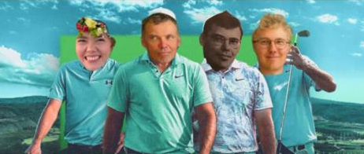

Tervetuloa Kontoloiden Ahvenanmaan golf-treenileirille
23.-25.8.2024
Iskän 60v kunniaksi mennään pelaamaan golffia Ahvenanmaalle jee jee
Aikataulu:
Pe 23.08.2024
- Klo 7.45: Ollan läsnä ja ilmoittaudutaan autolla Turun Satamassa
- Klo 08.45: Laiva lähtee Turusta
- Klo 14.10: Laiva saapuu Maarianhaminaan
- klo 15.00: Check-in Hotel Addlon Hamngatan 11
- Klo 15.30 -> Tehdään mitä huvittaa
La 24.8.2024
- Aamiainen
- Klo 12.33: Golffia kentällä Kungsbanan
Su 25.8.2024
- Aamiainen
- Klo 8.10: Golffia kentällä Slotssbanan
- Klo 11.00 Hotelli checkout (Pitää ehkä tehdä ennen kierrosta)
- Klo 13.25: Ollaan satamassa autossa
- Klo 14.25: Laiva lähtee takaisin
- Klo 19.50: Laiva saapuu Turkuun